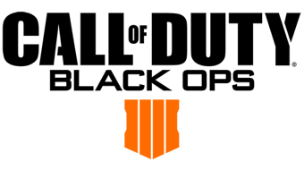
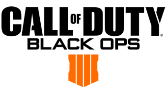

Games
A number of games are popular among professional competitors. The tournaments which emerged in the mid-1990s coincided with the popularity of fighting games and first-person shooters, genres which still maintain a devoted fan base. In the 2000s, real-time strategy games became overwhelmingly popular in South Korean internet cafés, with crucial influence on the development of esports worldwide. Competitions exist for many titles and genres, though the most popular games as of the late 2010s are Counter-Strike: Global Offensive, Call of Duty, League of Legends, Dota 2, Smite, Rocket League, Heroes of the Storm, Hearthstone, Super Smash Bros. Melee, StarCraft II and Overwatch.[100] Hearthstone has also popularized the digital collectible card game (DCCG) genre since its release in 2014.


 


